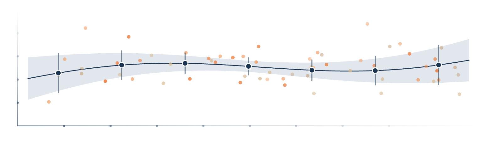

18 Communicating Inferences

We now understand nearly every step of a data analysis pipeline, from data cleaning and management to modeling to inference. If we are to make decisions based on this work, or inform others’ decisions, we need to make sure we communicate it well. We discussed back in Chapter 7 how important clear data reporting and visualization is, although in that case we only worked with summaries of data distributions and associations. Now that we’ve done more complex analysis processes and also made logical inferences, we should discuss how to effectively communicate that additional information.
18.1 Writing up results
We learned previously that APA style is the standard way of communicating statistical results. It uses abbreviations and a particular format for numbers so that anyone trained in this style can quickly and efficiently understand your results, rather needed to read a long written paragraph description.
18.1.1 Descriptive statistics for multiple variables
When we first learned APA style, we learned that we should report summaries of our data variables by communicating central tendency, spread, and sample size. Can you remember how to do this for the Extraversion variable in soto_work?
Fill in the NULL sections of the code below to output a summary table of these three variables.
Here’s one option:
soto_work |> summarize(mean = mean(Extraversion), sd = sd(Extraversion), n = length(Extraversion))
We would then write about this in the text of our report with these abbreviations. For instance, “we measured participants’ personality in terms of their extraversion (M = 3.33, SD = 0.71, N = 747) and conscientiousness (M = 3.88, SD = 0.73, N = 747).”
Besides the summarize() function in dplyr, group_by() is another function we used to help make find this summary information. This one let us subset our data based on values in a variable. Pairing it with summarize() is how we quickly calculated descriptive statistics within different subgroups:
That’s summarizing one variable. If we wanted to summarize several at once, we could make separate columns for the separate summary statistics of each variable:
Though that is quite a bit of typing. Alternatively, the across() function lets you tell summarize() that you want to calculate the same function across multiple variables. To do so, you pass a vector of variable names to across() as well as a vector of functions to apply (using named arguments to say what you want those outputs to be called). This does the same thing as above, with much less work.
Lastly, maybe you want to organize this more nicely, such that each variable is on its own row and each statistic its own column. The function pivot_longer() from the tidyr package will group different columns together, make a new column out of their names, and a new column out of their values.
The above code now puts every separate previous column header as a separate line, but that’s not really what we wanted. We built those column names with a format like “variable_stat”. So we can tell pivot_longer() that there are multiple names in these headers to keep track of, and what character separates them.
This output is now organized in an easily-readable format. Though, the presentation of it still leaves a bit to be desired. To make this table look nice for putting into a report, publication, etc., you don’t need to copy over the individual values to a separate software (that’s prone to making errors). Instead we could use a table-building package like sjPlot. Here is an example of the tab_df() function from that package, which makes a publication-ready table out of a data frame.
This output looks much more official! Simply copy this entire table into whatever report you are preparing1.
18.1.2 Inferential statistics
Besides summaries, we also want to report the results of our inferential statistics in a readable APA format. The five pieces of information required for making a full APA report of inferences are:
- The estimated effect size: This is the point estimate you get for your estimand - your model coefficient, coefficient of determination, sample mean, etc. You’d write this as M = ____ for a mean, = ____ for a model coefficient, \(R^2\)* = ____ for overall model performance, etc.
- A confidence interval: The confidence interval version of your estimate. Usually a 95% level is used, but you can choose a different level if you want. When writing out the confidence interval, you indicate what this level is by writing e.g. 95% CI [___]. Then you put the confidence interval boundaries in the brackets.
- A testing statistic, if doing hypothesis testing: This would be t if you’re looking at individual variables in a model or F if you’re looking at overall model performance.
- Degrees of freedom of the test statistic, if doing hypothesis testing: This information is in parentheses immediately following the test statistic. E.g., t(df) or F(k,df).
- The p-value of the hypothesis test, if doing hypothesis testing: This is written as p. If p is really small, we usually say that by using a less-than sign instead of equal sign, e.g. p < 0.001.
For instance, if our research goal was to estimate the unique effect of extraversion on leadership while controlling for conscientiousness, we’d write our results as:
“There was a significant partial effect of extraversion on leadership (\(\beta\) = 0.48, 95% CI [0.40 0.56], t(744) = 11.73, p < 0.001).
We’ve seen many times where this information is in the outputs from functions like summary() or confint(). Though again, the sjPlot package is helpful for making a pretty table version of it all. In this case, we can use tab_model().
When writing about the results of your inferential statistics, you will likely use the in-text abbreviations like in the example above when talking about your specific estimand and the conclusions you are making based on your inferences about it. But it can also be helpful to include a model table like this so that more information is available to the research about the context of that estimand within the data generation process you specified.
18.2 Standardized effect estimates
Let’s pause here to again talk about interpreting the actual effect estimate we get in the inference process. That effect of extraversion, 0.48, is an effect size. When we estimate it (as a point value or interval), we sometimes want to focus on the magnitude of that estimate rather than just the question of whether it might be zero or not. Focusing on the magnitude of the effect size helps us make decisions like is this effect important, impactful, or what expectations about the target value should I have based on the value of the explanatory variable.
When we have performed estimation so far, usually we’ve done it in models built from unstandardized variables. That means the effect estimates we have calculated are unstandardized effect sizes. An unstandardized effect size is the magnitude of an effect expressed in the units of the variables.
Unstandardized effect sizes are useful for making decisions about particular situations. Drug dose, cholesterol, height, etc. all having meaningful units by which their quantity is expressed. An unstandardized effect size representing a number in these units tells you how much of a drug you have to give to get an expected outcome, and amount of cholesterol in the blood is well-mapped to heart risks. We interact with the world through the units of quantities, and we best understand effects in these same units.
However, we have less understanding about units in domains that we’re not already familiar with or that are abstract concepts. E.g., if a model suggested that drinking alcohol before bed is associated with a decrease in sleep length of 2 hours, we intuitively know what that means. We all sleep, and we’ve all felt the effects of 8 hours versus 6 hours of sleep. But if that model instead suggested that drinking alcohol before bed is associated with a 2 point decrease in cognitive fluency, what does that mean? What concrete things define cognitive fluency? What does fluency = 5 feel like compared to fluency = 7? In our example with personality influencing leadership, what is the practical implication of someone with a leadership score of 3 vs. 4?
Reporting unstandardized coefficients is useful for understanding the importance of effects when the relevant variables are in units that we know about. However, an unstandardized stimate like 0.48 for the effect of extraversion on leadership is hard to interpret in a vacuum. Is that a big or small number? For this reason, reporting unstandardized effect estimates is less useful (and potentially more confusing for our readers!) when dealing with abstract variables or domains we are unfamiliar with.
In that case, we can standardize an effect size that we report. Standardized effect sizes remove the real-world units from variables. We’ve done a version of this already when learning about z-scores. A standardized variable is one that has been converted to z-scores. Z-scores, to review, express the value of a variable in terms of how many standard deviations it is away from the variable mean. By doing this, we don’t need to have domain expertise in the variable to intrinsically understand what certain values mean. Could you say what a temperature of 350F means relative to other typical temperatures for baking? What about a Gas mark of 5? You’re likely more familiar with the former than the latter. But if we convert each to z-scores and find that both have a z-score of -1, we can easily understand either of those values relative to their distribution.
A standardized effect size operates similarly. You don’t need to know about a variable’s units to understand the magnitude of a standardized effect size. Doing this has three benefits for understanding results from statistical models:
Standardized effect sizes help you evaluate how big or small an effect is when the units of measurement aren’t intuitive. We don’t have to know the typical range or mean of a variable already in order to interpret a standardized effect size - its value has all the information wrapped into it.
Standardized effect sizes can help you compare results across studies. Many variables are measured on different scales in different studies. This isn’t likely to happen with a variable like temperature, but there are multiple anxiety questionnaires to choose from, each of which is on a different scale. Reporting standardized effect size estimates can help readers understand trends or differences across studies. It can also help us compare effect sizes of variables in the same model that are measured in different units (although remember we need to use hypothesis testing to figure out if a difference in estimated effect is statistically significant).
Standardized effect sizes let us plan our research more easily. We’ll cover this process in ?sec-ch20, but the short of it is that there are tools we can use to figure out what sample size we should collect if we want to be able to find a particular effect size as statistically significant. Many of these tools use standardized effect sizes.
Next we will cover how to calculate some of the most common standardized effect statistics, depending on what your estimand is.
18.2.1 Standardized model coefficients
An unstandardized model coefficient is the coefficient estimate a model gives when the model is fit directly onto raw variable values. It is interpreted in the context of those variable units.
A standardized model coefficient, in contrast, is the estimate a model gives when those variables have been z-scored first. The code below gives an example of z-scoring Extraversion, Conscientiousness, and Leadership first in order to derive standardized model coefficient estimates.
Another way you can do this quickly, without computing z-scored variables yourself, is with the standardize_parameters() function in the effectsize package. Simply pass it a model object that was already fit on the raw variables, and it will recalculate the coefficients to show you the standardized versions. However, note that this approach doesn’t show you hypothesis test results, only effect estimates and confidence intervals.
These coefficient estimates are different than before. Now, \(\hat{\beta_0}\) is basically 0 and \(\hat{\beta_1} = 0.426\). This is because these coefficients are now in the context of z-scores instead of years of levels of the Likert scale used to measure personality and leadership. We’d interpret these standardized estimates as expecting someone to have an average leadership score (z = 0) if they had average extraversion (z = 0), when holding conscientiousness constant. This makes sense, because a regression line always runs through the mean of both the predictor and outcome variable. We’d also expect that leadership score to increase by 0.426 SDs for every 1 SD increase in extraversion, according to the value of the standardized \(\hat{\beta_1}\).
Also notice the p-value for our effect of interest in the standardized vs. unstandardized models. They are the same. This is because, regardless of the units, the strength of the effect is still the same. The estimated value changes, but so does the estimated standard error for calculating t and thus p. Thus there’s no difference in the significance of effect coefficients between a standardized and unstandardized model. This is why you can choose to express the effect size of an estimate in either standardized or unstandardized terms. However, when talking about the value of the estimate for an estimation goal, make sure you are being explicit about which one you are using. Otherwise your readers may make the wrong interpretation.
18.2.2 Correlation \(r\)
Another standardized coefficient that is common to see is correlation \(r\). We’ve discussed this idea a few times already - as a measure of linear association in Chapter 6 and again as a traditional alternative to a statistical model estimate in Chapter 17. By now we should be familiar with how to interpret this number when we see it. It can range from -1 (perfect negative correlation) to 1 (perfect positive correlation), with 0 meaning no relationship. This is considered a standardized effect size because it’s computed on the z-scored variables, and thus we can interpret its value no matter what units the original variables were measured in.
Note that if you have a multivariable model, the standardized coefficients for each explanatory variable are partial correlations, not the same thing as \(r\). They are the correlation with the outcome variable’s residuals after taking into account the effects of the other predictors.
18.2.3 Coefficient of determination \(R^2\)
While standardized \(\hat{\beta}\) and correlation \(r\) speak to the relationship between one explanatory variable and a target, \(R^2\) is a standardized effect size for how much variation an entire model explains. It tells us the proportional reduction in error of a full model compared to the null model, and its meaning is the same regardless of the units used for the variables in the model.
In the case of a one-variable model, it is actually the same thing as the square of the correlation coefficient:
That’s where the name “\(R^2\)” comes from. But of course it can also be used to to account for the proportion of error explained by a model with more than one predictor.
We also previously discussed \(\Delta R^2\) as a way of quantifying how much variance in a target variable is uniquely explained by a specific explanatory variable. To find this number, we fit separate models with and without the variable of interest and subtracted the \(R^2\) values:
We would call this quantity “change in \(R^2\)” or alternatively, the semi-partial \(R^2\). It is also a standardized effect size since its interpretation doesn’t depend on the variable units. We can find this ourselves with the operation above, or we can again use the effectsize package to give us a short cut with the r2_semipartial() function. This will return \(\Delta R^2\) for every explanatory variable in a model.
18.2.4 Cohen’s \(d\)
Standardized \(\hat{\beta}\), \(r\), \(R^2\), and \(\Delta R^2\) are all effect sizes that we have seen and used before. There are two more measures of effect size that are common to see in psychology research that we haven’t yet encountered.
One of them is called Cohen’s d. This measure was created by an influential quantitative psychologist named Jacob Cohen in the 1950s. The first version pairs with a one-sample t-test, and is used to represent the magnitude of difference between a sample mean and a hypothesized population mean, independent of real-world units. Cohen’s \(d\) is related to the concept of z-score, in that it indicates the size of a mean difference in standard deviation units. It is calculated as:
\[ d = \frac{\bar{X} - \mu}{s_{X}} \]
The other version of Cohen’s \(d\) represents the standardized difference between two categorical groups:
\[ d = \frac{\bar{X_1} - \bar{X_2}}{s_{pooled}} \]
\(s_{pooled}\) is a weighted average of the standard deviations from both groups:
\[s_{pooled} = \frac{df_1s_1 + df_2s_2}{df_1 + df_2}\]
Cohen’s \(d\) can range between 0 and infinity, but in practice is rarely more than 2. The bigger the \(d\) value, the bigger an effect is. To find Cohen’s \(d\) in R, you can pass a group model formula and dataset argument to the cohens_d() function in the effectsize package as if you were fitting the model.
For instance, here’s the unstandardized difference in mean extraversion between people who do not have heart disease and people who do:
However, this is expressed in the units extraversion was measured on, which were rather arbitrary / specific to the questionnaire used in this study. So here is how to find Cohen’s \(d\) of this mean difference instead:
Note the sign is flipped here because cohens_d() chooses to subtract the mean of reference group from the mean of the other group, rather than the other way around like lm()2. But the absolute magnitude of the effect is what’s important here. This result tells you that people without heart disease (X=0) have 0.23SD higher extraversion than people with heart disease.
Note that we could have found the same standardized effect estimate ourselves if we z-scored only the target variable in a statistical model call:
18.2.5 Cohen’s \(f^2\)
Cohen also came up with something very similar to \(R^2\), called Cohen’s \(f^2\) (lowercase, not to be confused with an F value in an F distribution). Rather than describing the proportion of variation in a target that a model explains, Cohen’s \(f^2\) is the ratio of explained to unexplained error:
\[f^2 = \frac{R^2}{1-R^2} \]
Sometimes people report is as just Cohen’s \(f\):
\[f = \sqrt{\frac{R^2}{1-R^2}} \]
Rather than being bound between 0 and 1 as \(R^2\) is, \(f^2\) can be as small as 0 and theoretically as large as infinity. A bigger \(f^2\) means a model is explaining more variation. If \(f^2\) is above 1, then the model explains more variation than what is left unexplained. In psychology that is rare but not unheard of.
The above equation is known as the global \(f^2\), or the \(f^2\) score for a model compared to the empty model with no explanatory variables.
There is also a local \(f^2\) that tells you the increase in explained variation between a full model and a model with an explanatory variable taken out (we’ll call these \(R_{full}\) and \(R_{sub}\)). The equation for that is:
\[f^2 = \frac{R^2_{full} - R^2_{sub}}{1-R^2_{full}} \]
You can get this local \(f^2\) in the effectsize package by passing a model object to the cohens_f_squared() function:
18.3 What is a good effect size?
When evaluating an unstandardized effect size for units you are familiar with, you will already have a sense about what an “important” vs. “trivial” effect size is. If you’re studying for a test, 10 hours of studying making a difference of 1% on your grade might not be worth it, but a difference of 10% could be worth spending your whole Saturday in the library.
When you use a standardized effect size, the down side is that you don’t have any real-world units to ground this number in. But the up side is that the same standardized effect size can apply across many research studies. Over time, then, you begin to accumulate a sense for what value of a standardized effect size is “big”, “medium”, or “small.”
When Jacob Cohen first formulated his measurements of \(d\) and \(f^2\), he came up with rules of thumb for what counts as a small, medium, and large effect. He decided that, in general, a “large” effect is one that is obvious - people generally should be able to see this effect in the population, without the need to collect data. This translates to a Cohen’s \(d\) of >= 0.8. Something like the difference in height between men and women is a large effect because it is generally possible to see without systematic research, and also has a Cohen’s \(d\) > 0.8:
Cohen set a “medium” effect to be one that is 0.5 < \(d\) < 0.8. A medium effect should be visible within a representative dataset “to the naked eye of a careful observer.” You might not obviously notice it in real life, but if you collect data and plot the histograms of two groups, you’d be able to see a difference in the histograms.
Finally, a “small” effect is 0.2 < \(d\) < 0.5. This is one that you can’t see with the naked eye, but that is still meaningful. It will still matter at the scale of an entire population. Cohen considered any \(d\) less than 0.2 to be trivial and not worth studying.
In his 1988 book “Statistical Power Analysis for the Behavioral Sciences”, Cohen also set some general rules of thumb for \(r\) / standardized \(\beta\), \(R^2\), and \(f^2\):
| Effect size | small effect | medium effect | large effect |
|---|---|---|---|
| \(d\) | 0.2-0.5 | 0.5-0.8 | 0.8+ |
| \(r\) / \(\beta\) | 0.1-0.3 | 0.3-0.5 | 0.5+ |
| \(R^2\) | 0.02-0.10 | 0.10-0.25 | 0.25+ |
| \(f^2\) | 0.02-0.15 | 0.15-0.35 | 0.35+ |
However, in practice it is best to remember that these are just guidelines. A large effect might not be very trustworthy if you found it in a small sample, and a tiny effect might still be theoretically important (e.g., it’s not a great predictor on its own but significantly contributes to a larger model). It is better to be aware of the field of study you are working in, what the typical effect sizes are, and how your measured effect size compares to those. For instance, it is pretty rare to find large effects in psychology research (most of those have been published already!). A lot of modern work is on the little effects that give the data generation process nuance.
18.4 Visualizing inference results
Finally, to mirror our last discussion of communicating results, we should also show what we find, not just talk about it (however efficiently we use our words). Now that we’ve done inference, this means visualizing not only the data within our sample, but also the sample estimate we derive and how precise it is. That way, someone can look at our plot and immediately understand the sample we have as well as the conclusions we are capable of making with it.
Previously, we followed three principles of good data visualization:
- Show the data
- Don’t distort the data
- Label the data
Now, let’s add one more principle for when we’re communicating inferences:
- Show the estimate, with uncertainty
That generally means indicating on the plot, in some way, what the sample estimate is. Then, we place some sort of bars around it to indicate something like the standard error or confidence interval.
18.4.1 Histograms
Let’s see what this looks like in the context of a few plots we already know how to make. First, we can start with a one-variable plot like a histogram. As you may recall, there are functions for building this type of plot using the ggplot package. Here is a basic histogram of the Extraversion variable as a refresher.
As simple as this is, it satisfies the first three principles of data visualization. But it doesn’t tell us what single sample estimate represents these data. For that, we need to add new layers with summary information.
To add an estimate like the mean, we need to calculate that first. Of course we can use something like mean() to do this, or we can fit an empty statistical model and find the estimate of \(\hat{\beta_0}\). Let’s do that second option.
Next, we want to be able to add that to our plot as a new layer. The annotate() function in ggplot is one way to include information from outside your dataset that you calculated yourself3. To use annotate(), tell it what kind of geom you want to add to the plot (we will use “point” in order to add one point at the location of our mean estimate). Then, we tell annotate() the x/y coordinate where you want your geom to land.
Here is how we can use annotate() to add our estimate of \(\hat{\beta_0}\) to the histogram image:
Great! Now we can quickly see not only the distribution of the data, but where the mean is. However, that’s not the full story. We also want to be able to show our reader how certain we are in this estimate - can we be really precise with this as an estimate of the population mean of extraversion, or should we hedge and say the there is some uncertainty around this point value?
Adding this extra uncertainty information requires visually adding an interval to the plot. Some people use +/- 1 standard error to create their interval, while others use a confidence interval. Let’s use that latter option since we know how to find that easily.
This object is a vector with two values - the lower and upper bound of the 95% confidence interval for \(\hat{\beta_0}\) (if we had wanted a different confidence level, we’d change the level= argument in confint()). To include this information in the annotate() layer of our plot, we can change the type of geom to “pointrange” instead of “point”. When doing so, we also include xmin= and xmax= arguments to tell the geom how wide to make the point range. Here’s a demonstration:
Our image actually doesn’t look different right now because our confidence interval is so narrow, the dot for the mean covers it up - we have a very precise estimate given our sample size! To make this plotting lesson clearer however, let’s look at what would happen if our sample size was only 100 people:
Now, we’re satisfying all four principles of data visualization: we’re showing the data, not distorting it, labeling it, and showing an estimate with uncertainty.
18.4.2 Categorical explanatory variable
When we want to plot associations between two variables instead of one distribution, we need a two-variable plot. Something like a boxplot is used when an explanatory variable is categorical:
This plot summarizes the median and IQR of the data within each group, but it doesn’t give us a good idea of how confident we can be in these values as estimates for a population. So instead, let’s use the point range functionality we learned above, but plot individual group means and confidence intervals for each group.
First, lets calculate those estimates. A model object only gives us the coefficient \(\beta_1\), which is the difference between group means. The group means themselves are different estimates, \(\hat{Y}\) when X=0 and \(\hat{Y}\) when X=1. predict() tells us what those are, since we predict the conditional mean for \(\hat{Y}\).
So that takes care of finding our point estimates. To get confidence intervals of these predictions, predict() actually has an optional argument interval= where we can specify that we want a confidence interval along with the point prediction.
Now we can pass all this information to the annotate() layer of a plot. Since there are multiple group means and confidence interval bounds, we pass vectors of these values to the relevant arguments in annotate() instead of individual numbers.
Notice how one confidence interval in this plot is wider than the other. That’s because there are fewer people in the heart disease group, so our estimate of that specific group mean is less certain. We wouldn’t be able to know that from just the boxplot without also showing the data and our estimate with uncertainty.
18.4.3 Numeric explanatory variable
Alternatively, if our explanatory variable is numeric, we would use something like a scatter plot to show our data:
The sample estimate in this case that we would like to show is the \(\hat{\beta_1}\) effect of X on Y. We know that is the difference in conditional mean of Y for every one-unit increase in X - aka the slope of a best fitting line. So if we want to plot this estimate on a scatter plot, we can draw a best fitting line.
When this estimate is uncertain, the true population value of \(\beta_1\) could be a bit higher or a bit lower. Since \(\beta_1\) is the slope of the best fitting line, that means the “real” slope in the population could be a bit steeper or shallower. So to visualize uncertainty of this estimate on a plot, we add what is called a confidence band. This is a faded band around the best fitting line that shows how much the line could tilt up or down if it were actually the slope at the bottom vs. the top of the confidence interval for \(\beta_1\).
A new function geom_smooth() lets us add the best fitting line and confidence interval all in one go. We just tell it what kind of line to draw, with method='lm'.
18.4.4 Multiple explanatory variables
Finally, another situation we have discussed is building statistical models with multiple explanatory variables.
How do we put more than two variables onto a plot? It’s very hard to do in a way that still shows the data, because we only have two dimensions available to us on a computer screen. This is one of the situations where the “show the data” principle falls apart. You should be ready to break this rule if there is too much data to include and it obfiscates the plot instead of adding clarity. You’ll also break this rule if you can’t put all the dimensions of the data onto the screen at once.
We can still visualize the effect estimates and their uncertainty, however. A common way to do this is called a forest plot. This sort of plot visualizes the estimates of each explanatory variable on a number line, with different estimates stacked horizontally. This way you can easily see the relative magnitude of each estimate as well as each of their uncertainties.
We could build this up ourselves with ggplot code by making a data frame of each effect estimate and its accompanying confidence interval. Then we would pass that smaller data frame, rather than the overall dataset, to ggplot and add a geom_pointrange() layer. We also want min and max information added to the aesthetic mapping function.
sjPlot also gives us a one-and-done function plot_model() that will do all of the above code for us:
18.5 Chapter resources
18.5.1 Learning goals
After reading this chapter, you should be able to:
- Find and write the results of inferential statistics in APA-style
- Find and interpret standardized model estimates
- Find and interpret other standardized effect sizes like \(d\), \(r\), and \(f^2\)
- Discuss ideas of what makes a small vs. large effect size
- Visualize sample estimates and confidence intervals on data plots
18.5.2 New concepts
- unstandardized effect size: an effect size represented in the original units of the variables.
- standardized effect size: an effect size represented in terms of standardized units (z-scores, proportion of error, etc.).
- Cohen’s \(d\): A standardized effect size that represents the magnitude of difference between two group means in terms of standard deviation units.
- Cohen’s \(f^2\): A standardized effect size that represents model performance through the ratio of explained to unexplained error.
- global \(f^2\): The increase in Cohen’s \(f^2\) for a model with predictors compared to the empty model.
- local \(f^2\): The increase in Cohen’s \(f^2\) for a larger model compared to a smaller model.
- forest plot: a type of data visualization that plots point and interval estimates for all explanatory variables in a multivariable model.
18.5.3 New R functionality
Even better, you could write your entire report/paper in a Quarto markdown file in R, which lets you put code cells in amongst text passages you are writing. That way if new data comes in or you find a bug in your analysis code, you can simply re-run the entire file to update the stats rather than hunting through a word document to fix individual numbers. This textbook is written with Quarto files!↩︎
you could change this by recoding the binary variable with
factor().↩︎Since
ggplotlets you control a plot very precisely, there are lots of approaches to this - if you search the Internet generally for putting estimates and intervals on plots in ggplot too, you’ll find a ton of different methods. This is just one option. If you don’t like how it looks, try another!↩︎